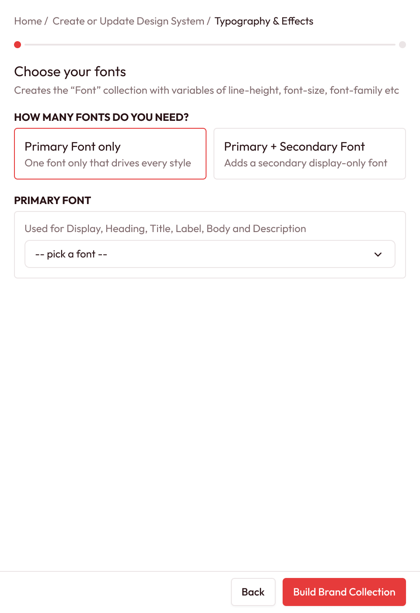
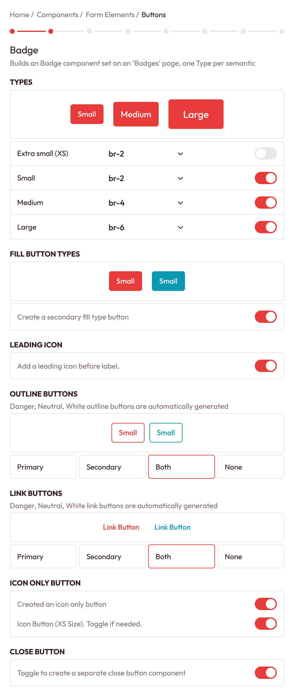
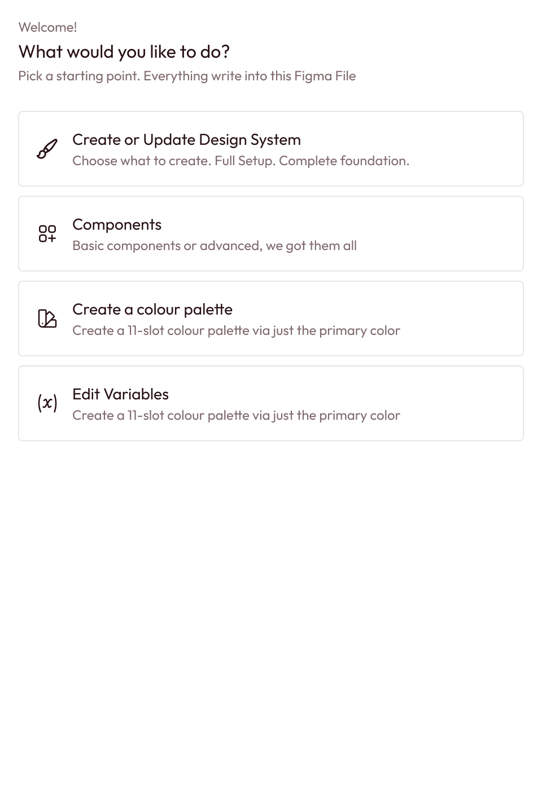
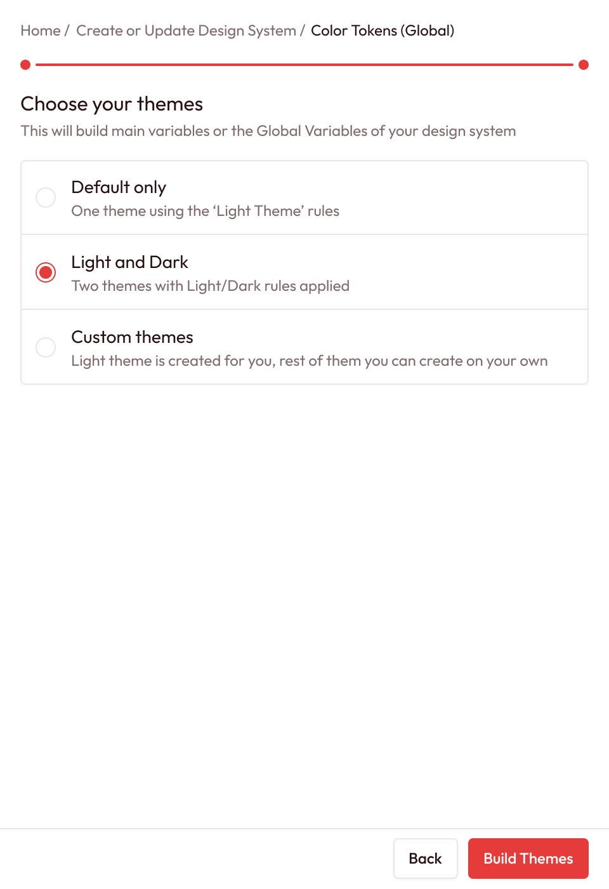
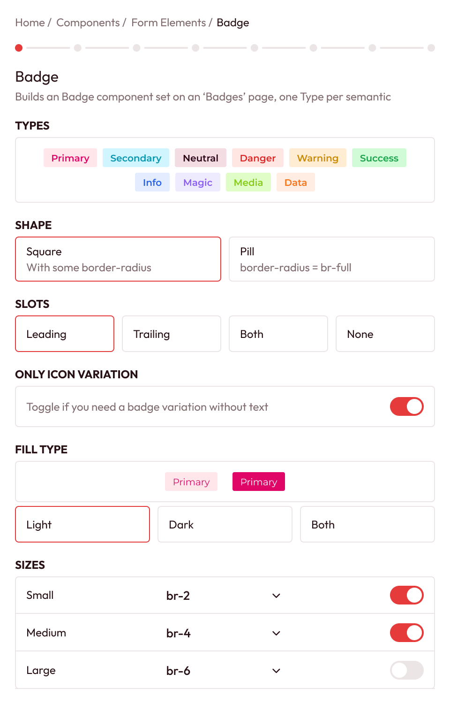
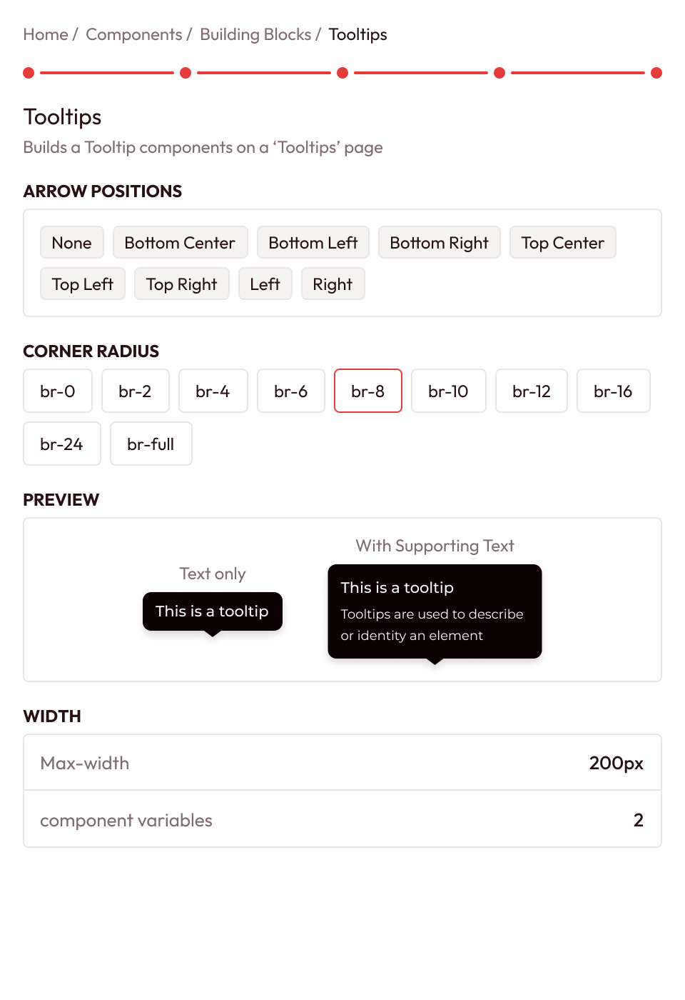
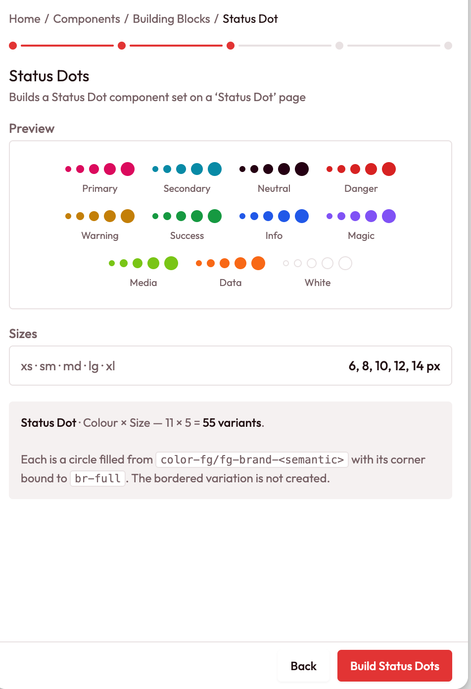

for designers · a figma plugin
from one hex code to a complete design system.
i have built more than ten design systems by hand, and most of those weeks went into work that was necessary and not creative. so i built a plugin that does that part the way i would: tokens, themes, styles, documentation and 2,991 connected component variants, from a handful of choices about your brand.
measured from one complete build: seven colour palettes, one brand, light and dark themes, every optional colour group on, the default at every step. fewer choices build fewer of each.
the part of the job nobody puts in a portfolio
every serious product needs a design system, and almost every team builds it by hand. colour ramps in a separate tool. hundreds of tokens named one at a time. light and dark wired together. a button in every size, state and colour, then the same again for inputs, badges, tabs, modals and charts. then documenting all of it.
and hand-built systems decay. a colour gets hard-coded in one component, the dark theme drifts, a spacing value is typed instead of referenced. six months later, changing the brand colour means hunting through hundreds of components.
teams either ship without a real system, or burn their best designers building one.
four setup steps, then the components
pick your colours. get the ramps.
every colour becomes an 11-step ramp generated in oklch, so the steps look evenly spaced to the eye rather than only to the maths. your exact colour is always step 07. the plugin never shifts the colour you chose. each ramp gets a matching transparency ramp, and light colours like yellow are shaped so the dark end does not fall off a cliff.
map palettes onto roles. choose your themes.
six roles are always present: primary, neutral, danger, warning, success, info. four are optional: secondary, magic, media, data. then default only, light and dark, or fully custom themes. every value is an alias into the brand collection. nothing is a raw colour.
fonts, a type scale, focus rings, elevation.
a primary family and an optional display family, a full type scale, and text styles that ride font variables. focus rings for every semantic colour and six elevation levels, all coloured from variables so they theme correctly. documentation drawn before the fonts existed is restyled in the font you chose.

built in order, and it tells you why.
components are grouped and built one after another. where one is made from another, a toast reusing the real close button or a dropdown being a list box with a header and footer, the plugin says so in plain language and tells you what to build first.

a system, not a style sheet
a real token architecture
primitives, brand roles, themed semantic tokens. change a primitive and it cascades through every brand, every theme and every component.
figma, used the way experts use it
variables and modes. styles bound to variables. component properties instead of multiplied variants. native slots. instances of shared parts, not copies.
documentation that builds itself
a foundation page with colour sheets, a variables catalogue, a type specimen and an effects sheet. rebuild it any time; it replaces, never stacks.
change your mind without starting over
every setup step breaks into parts, and any part can be rebuilt alone. a resume screen ticks off everything already built.
an organised file, automatically
43 pages in 8 groups with dividers, foundation and icons first, kept in order every time something is added.
built and tested like software
171 automated checks build whole systems in a simulated figma and verify them: no crossing chart bands, no duplicated component names.
41 component families, available now
- icons
- 289 icons, recoloured from your tokens
- building blocks
- avatars · dividers · status dot · tooltips · display icons · progress · spinner
- form elements
- badges · buttons · inputs · checkbox and radio · toggles · sliders · list item · tags
- display
- accordions · cards · list box · empty states · tables and cells
- overlays
- popovers · dropdowns · context menu · modals · side panels · bottomsheets
- charts
- graph base · bar · donut and pie · line and area · stacked area · radial
- notification
- toast · banners · callouts · notes
- navigation
- nav list items · tabs · breadcrumbs · pagination
- coming next
- alerts, activity, feed, timeline, calendar, filter, message bubbles, chatbox, file upload. not built yet.
most systems stop at buttons. this one draws charts.
bar graphs vertical and horizontal, single and stacked. donut and pie in five sizes, three hole depths, two to eight segments. line and area, sharp or smooth, with six distinct curve shapes. stacked areas whose bands can never cross. radial bars that double as gauges. 7, 15 or 30 data points.
charts use your brand palettes. pies use a sequential scale of one colour while bars and lines use distinct ones, the way data visualisation practice recommends. and every chart shares one dataset, so a dashboard mock-up agrees with itself.
before, and after
beforethe first weeks of a project go into ramps, pasted hex codes, hand-named tokens and forty sibling buttons.
afterchoose the colours and fonts, answer a few questions per component, and every value traces back to a token.
beforerebranding means auditing every component.
afterchange the palette and the system follows, because nothing was hard-coded.
beforedark mode is a second project.
afterdark mode is a choice made in step two.
- founding and solo designersthe system a larger company would have, without a design systems team.
- agencies and freelancersa client-branded system at the start of an engagement, not rebuilt foundations every time.
- design systems leadsskip the scaffolding and spend the weeks on decisions specific to your product.
- multi-brand and white-label teamsbrands are modes: one system, many brands, switchable.
questions designers ask first
does it work with my existing file?
it builds into the file you open it in. re-running a step updates what it created rather than duplicating it.
does it write code?
no. it builds the design system inside figma, and a library-ready file you publish the usual way.
can i have more than one brand?
yes. each brand is a mode of the brand collection. more than one mode needs a paid figma plan.
do i have to build every component?
no. build only the groups you need. where one component is made from another, the plugin tells you which to build first.
can i change things after it is built?
yes. any setup step, or any part of one, can be rebuilt on its own, and component steps can be re-run too.
the plugin, screen by screen




